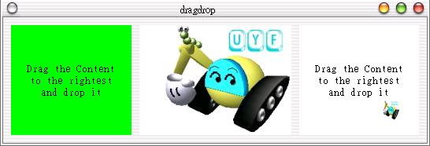

一個Widget元件是藉由setAcceptDrops()方法來設定是否接受拖放功能，拖放的動作是從按下滑鼠按鍵開始，我們產生一個QDragObject並指定拖曳內容，然後使用dragCopy()開始拖曳，QDragObject在拖曳結束之後會自動消滅：
void mousePressEvent(QMouseEvent *e) {
if(e->button() == LeftButton) {
if(labeltype == Des)
return;
QDragObject *drobj = 0;
if(pixmap()) { // 如果有圖片
// 產生QDragObject
drobj = new QImageDrag(pixmap()->convertToImage(), this);
QPixmap pm;
// 產生縮圖
pm.convertFromImage(
pixmap()->convertToImage().smoothScale(25, 25));
// 拖曳時的顯示圖形與游標位移
drobj->setPixmap(pm, QPoint(-14, -20));
}
else if(text()) { // 如果有文字
drobj = new QTextDrag(text(), this);
drobj->setPixmap(QPixmap("text.gif"), QPoint(-25, -15));
}
// 開始拖放動作
if(drobj)
drobj->dragCopy();
}
當物件被拖曳至目的地時，會發生dragEnterEvent()事件，我們使用canDecode()方法判斷物件是否可解析，然後使用accept()設定接收此物件：
void dragEnterEvent(QDragEnterEvent *e) {
if(e->source() == this) return;
if(labeltype == Des) {
// 如果可解析物件: 影像或文字
if(QImageDrag::canDecode(e) || QTextDrag::canDecode(e)) {
e->accept(); // 接收拖放物件
setBackgroundColor(Qt::white);
}
}
}
拖曳至目的地後放開滑鼠按鍵會發生dropEvent()，我們使用QMimeSource接收物件，使用decode()解析物件，然後設定相對應的放置動作：
void dropEvent(QDropEvent *e) {
QString str;
QPixmap pm;
QMimeSource *drop = e;
// 解析物件
if(QTextDrag::decode(drop, str))
setText(str);
else if(QImageDrag::decode(drop, pm))
setPixmap(pm);
setBackgroundColor(Qt::green);
}
如果拖曳物件離開目的地，會發生dragLeaveEvent()，您可以設定一些還原動作，或不作任何事：
void dragLeaveEvent(QDragLeaveEvent *) {
setBackgroundColor(Qt::green);
}
下面的程式碼是一個拖放功能的完整程式示範，您可以將圖片或文字拖放至最右邊的QLabel：
#include <qapplication.h>
#include <qhbox.h>
#include <qlabel.h>
#include <qdragobject.h>
#include <qclipboard.h>
#include <qdatetime.h>
class DDLabel : public QLabel {
public:
enum labelType {Sor, Des};
DDLabel(QWidget *parent, int type) : QLabel(parent), labeltype(type) {
setBackgroundColor(Qt::green);
setAlignment(AlignCenter);
setAcceptDrops(true); // 可接收Drop
}
protected:
void dragEnterEvent(QDragEnterEvent *e) {
if(e->source() == this) return;
if(labeltype == Des) {
// 如果可解析物件: 影像或文字
if(QImageDrag::canDecode(e) || QTextDrag::canDecode(e)) {
e->accept(); // 接收拖放物件
setBackgroundColor(Qt::white);
}
}
}
// 還原背景顏色
void dragLeaveEvent(QDragLeaveEvent *) {
setBackgroundColor(Qt::green);
}
void dropEvent(QDropEvent *e) {
QString str;
QPixmap pm;
QMimeSource *drop = e;
// 解析物件
if(QTextDrag::decode(drop, str))
setText(str);
else if(QImageDrag::decode(drop, pm))
setPixmap(pm);
setBackgroundColor(Qt::green);
}
void mousePressEvent(QMouseEvent *e) {
if(e->button() == LeftButton) {
if(labeltype == Des)
return;
QDragObject *drobj = 0;
if(pixmap()) { // 如果有圖片
// 產生QDragObject
drobj = new QImageDrag(pixmap()->convertToImage(), this);
QPixmap pm;
// 產生縮圖
pm.convertFromImage(
pixmap()->convertToImage().smoothScale(25, 25));
// 拖曳時的顯示圖形與游標位移
drobj->setPixmap(pm, QPoint(-14, -20));
}
else if(text()) { // 如果有文字
drobj = new QTextDrag(text(), this);
drobj->setPixmap(QPixmap("text.gif"), QPoint(-25, -15));
}
// ?#125;始拖放動作
if(drobj)
drobj->dragCopy();
}
}
private:
int labeltype;
};
int main(int argc, char **argv) {
QApplication app(argc, argv);
QHBox *hbox = new QHBox();
hbox->setMargin(10);
hbox->setSpacing(10);
DDLabel *lab1 = new DDLabel(hbox, DDLabel::Sor);
lab1->setText("Drag the Content\nto the rightest\nand drop it");
DDLabel *lab2 = new DDLabel(hbox, DDLabel::Sor);
lab2->setPixmap(QPixmap("logo.jpg"));
DDLabel *lab3 = new DDLabel(hbox, DDLabel::Des);
lab3->setText("Drop here");
app.setMainWidget(hbox);
hbox->show();
return app.exec();
}
以下為執行時的結果畫面之一（拖曳圖片中）：

|
|